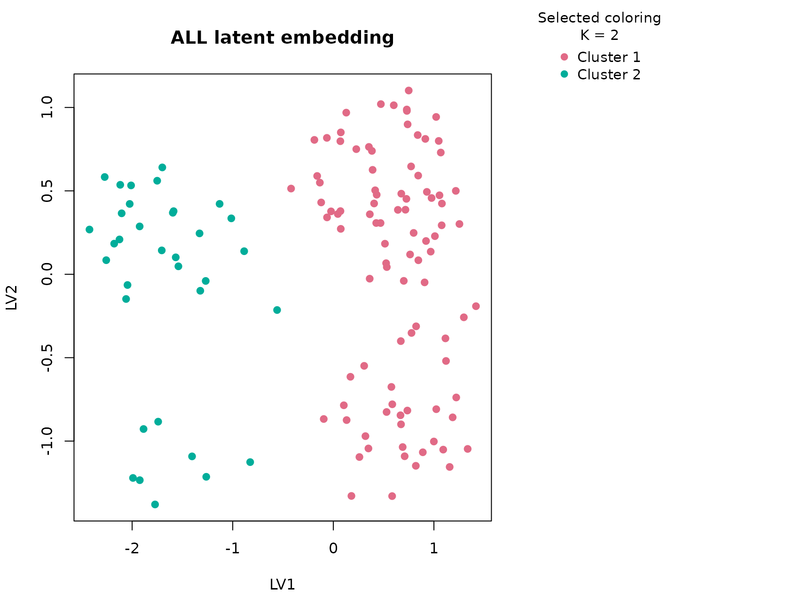

Background
ALL is a classic Bioconductor microarray experiment
package for acute lymphoblastic leukemia. The raw experiment contains
expression measurements for 128 patients together with immunophenotype
and molecular subtype annotations. uccdf ships a compact
derivative called all_gene_panel that preserves a small set
of highly variable probe sets together with the observed lineage and
clinical context needed for interpretation.
This is a useful omics example because the dominant biological axis is not subtle. B-lineage and T-lineage samples differ strongly, and some molecular subtypes sit on top of that broader split. A tutorial article should therefore do more than state that clusters exist. It should show which expression features carry the separation, how strongly the consensus supports the split, and how the resulting groups line up with established leukemia annotations.
Objective
The objective is to determine whether the reduced ALL
panel supports a stable consensus partition and whether the selected
clusters correspond to the major B-cell versus T-cell immunophenotype
distinction. A secondary objective is to check whether molecular subtype
information remains unevenly distributed across the recovered clusters,
which would suggest that the compact panel still contains clinically
interpretable structure.
Data preparation
if (file.exists("data/all_gene_panel.rda")) {
load("data/all_gene_panel.rda")
} else if (file.exists("../data/all_gene_panel.rda")) {
load("../data/all_gene_panel.rda")
} else {
data(all_gene_panel, package = "uccdf")
}
analysis_all <- all_gene_panel[, c(
"sample_id", "38355_at", "36638_at", "38514_at", "41214_at",
"36108_at", "39318_at", "38096_f_at", "38319_at"
)]
head(analysis_all)
#> sample_id 38355_at 36638_at 38514_at 41214_at 36108_at 39318_at
#> 01005 01005 9.208196 7.694118 8.783013 9.890862 4.472759 9.559630
#> 01010 01010 8.602583 7.090124 11.040864 9.135392 10.014685 10.869600
#> 03002 03002 3.409324 6.087817 9.321789 5.277870 8.815481 5.980342
#> 04006 04006 7.631437 10.918375 4.416378 9.522582 7.278217 7.168756
#> 04007 04007 9.460676 10.068065 7.746814 9.813016 8.771589 10.304546
#> 04008 04008 8.187486 3.297679 7.583775 9.856136 8.829652 6.964849
#> 38096_f_at 38319_at
#> 01005 11.20942 4.194986
#> 01010 10.78209 6.215835
#> 03002 10.53502 4.470794
#> 04006 9.66569 4.751396
#> 04007 10.71009 4.430895
#> 04008 11.39216 4.919729Analysis
fit_all <- fit_uccdf(
analysis_all,
id_column = "sample_id",
candidate_k = 1:5,
n_resamples = 20,
n_null = 39,
row_fraction = 0.9,
col_fraction = 0.9,
seed = 101
)
fit_all$selection
#> $alpha
#> [1] 0.05
#>
#> $global_p_value
#> [1] 0.025
#>
#> $null_family
#> [1] "independence_marginal_null"
#>
#> $detected_structure
#> [1] TRUE
#>
#> $best_exploratory_k
#> [1] 2
#>
#> $best_supported_k
#> [1] 2
select_k(fit_all)
#> k stability null_mean null_sd stability_excess z_score p_value supported
#> 1 2 0.9038448 0.2721660 0.03754539 0.6316788 16.824401 0.025 TRUE
#> 2 3 0.9552416 0.2962040 0.05046363 0.6590376 13.059654 0.025 TRUE
#> 3 4 0.8158979 0.3600883 0.05469783 0.4558096 8.333229 0.025 TRUE
#> 4 5 0.7651567 0.4323472 0.04910173 0.3328095 6.777959 0.025 TRUE
#> objective
#> 1 16.685771
#> 2 12.839931
#> 3 7.055970
#> 4 5.456071Results
all_assign <- merge(
augment(fit_all),
all_gene_panel,
by.x = "row_id",
by.y = "sample_id",
all.x = TRUE
)
head(all_assign)
#> row_id cluster confidence ambiguity exploratory_cluster
#> 1 01003 2 0.9800777 0.01992226 2
#> 2 01005 1 0.9878672 0.01213278 1
#> 3 01007 2 0.9700602 0.02993975 2
#> 4 01010 1 0.9879423 0.01205769 1
#> 5 02020 2 0.9704433 0.02955670 2
#> 6 03002 1 0.9851101 0.01488992 1
#> exploratory_confidence exploratory_ambiguity assignment_mode selected_k
#> 1 0.9800777 0.01992226 selected 2
#> 2 0.9878672 0.01213278 selected 2
#> 3 0.9700602 0.02993975 selected 2
#> 4 0.9879423 0.01205769 selected 2
#> 5 0.9704433 0.02955670 selected 2
#> 6 0.9851101 0.01488992 selected 2
#> exploratory_k 38355_at 36638_at 38514_at 41214_at 36108_at 39318_at
#> 1 2 9.343481 3.937520 4.142900 9.543518 4.274392 5.652315
#> 2 2 9.208196 7.694118 8.783013 9.890862 4.472759 9.559630
#> 3 2 3.284177 4.023000 8.436490 4.842859 4.645137 5.538086
#> 4 2 8.602583 7.090124 11.040864 9.135392 10.014685 10.869600
#> 5 2 3.333845 3.800702 8.043980 4.845538 5.381358 6.093337
#> 6 2 3.409324 6.087817 9.321789 5.277870 8.815481 5.980342
#> 38096_f_at 38319_at bt mol_biol sex age age_band
#> 1 5.974618 10.016641 T NEG M 31 21-40
#> 2 11.209422 4.194986 B2 BCR/ABL M 53 41-60
#> 3 4.159461 8.754029 T3 NUP-98 F 16 <=20
#> 4 10.782087 6.215835 B2 NEG M 19 <=20
#> 5 6.574654 9.450256 T2 NEG F 48 41-60
#> 6 10.535016 4.470794 B4 BCR/ABL F 52 41-60The selected solution should be read together with the assignment table. The key practical outputs are the selected cluster, the confidence value, and the original annotation columns used only for interpretation.
aggregate(
cbind(`38355_at`, `36638_at`, `38514_at`, `41214_at`,
`36108_at`, `39318_at`, `38096_f_at`, `38319_at`, confidence) ~ cluster,
all_assign,
function(x) round(mean(x, na.rm = TRUE), 2)
)
#> cluster 38355_at 36638_at 38514_at 41214_at 36108_at 39318_at 38096_f_at
#> 1 1 6.79 7.34 7.93 7.92 7.38 9.22 10.31
#> 2 2 7.44 3.86 6.97 8.30 5.02 6.02 6.02
#> 38319_at confidence
#> 1 4.84 0.98
#> 2 9.37 0.96
table(all_assign$cluster, all_assign$bt)
#>
#> B B1 B2 B3 B4 T T1 T2 T3 T4
#> 1 5 19 36 23 11 0 0 0 0 0
#> 2 0 0 0 0 1 5 1 15 10 2
round(prop.table(table(all_assign$cluster, all_assign$bt), margin = 1), 3)
#>
#> B B1 B2 B3 B4 T T1 T2 T3 T4
#> 1 0.053 0.202 0.383 0.245 0.117 0.000 0.000 0.000 0.000 0.000
#> 2 0.000 0.000 0.000 0.000 0.029 0.147 0.029 0.441 0.294 0.059
sort(table(all_assign$mol_biol), decreasing = TRUE)[1:10]
#>
#> NEG BCR/ABL ALL1/AF4 E2A/PBX1 NUP-98 p15/p16 <NA> <NA>
#> 74 37 10 5 1 1
#> <NA> <NA>
#>
round(prop.table(table(all_assign$cluster, all_assign$mol_biol), margin = 1), 3)
#>
#> ALL1/AF4 BCR/ABL E2A/PBX1 NEG NUP-98 p15/p16
#> 1 0.106 0.394 0.043 0.447 0.000 0.011
#> 2 0.000 0.000 0.029 0.941 0.029 0.000
plot_embedding(fit_all, color_by = "selected", main = "ALL latent embedding")
plot_consensus_heatmap(fit_all, main = "ALL consensus heatmap")Discussion
This dataset behaves the way a strong omics example should. The global null is rejected, the selected solution remains supported after null calibration, and the consensus heatmap shows a broad block structure rather than a fragile, sample-by-sample patchwork. In practice, the selected two-cluster solution aligns closely with the major B-lineage versus T-lineage separation. That is important because it shows the compact panel still carries the dominant biology even after the original expression matrix has been reduced to a small sample table.
The subtype table adds a second layer of interpretation. Several molecular subtypes concentrate within one lineage-defined cluster rather than being distributed uniformly across both groups. That is exactly the pattern we would expect if the first consensus split captures a broad developmental axis and the remaining within-lineage heterogeneity is real but secondary. In other words, the compact panel is not merely separating noise; it is preserving an interpretable hierarchy of disease structure.
The article also highlights a design point of uccdf. The
package is not trying to replace a full leukemia workflow based on the
original high-dimensional matrix. Instead, it shows how one can carry a
biologically grounded sample-level table into a typed consensus analysis
while keeping the output defensible with a null-calibrated
K decision.
Interpretation
For ALL, the selected clusters should be interpreted as
stable expression-defined patient groups that primarily reflect the
B-cell versus T-cell immunophenotype split. The agreement with
bt is strong enough that the clusters are easy to explain,
while the molecular subtype table reminds us that each cluster still
contains clinically meaningful internal heterogeneity. In a real
project, this would justify drilling into subtype-enriched clusters
rather than stopping at the first partition.